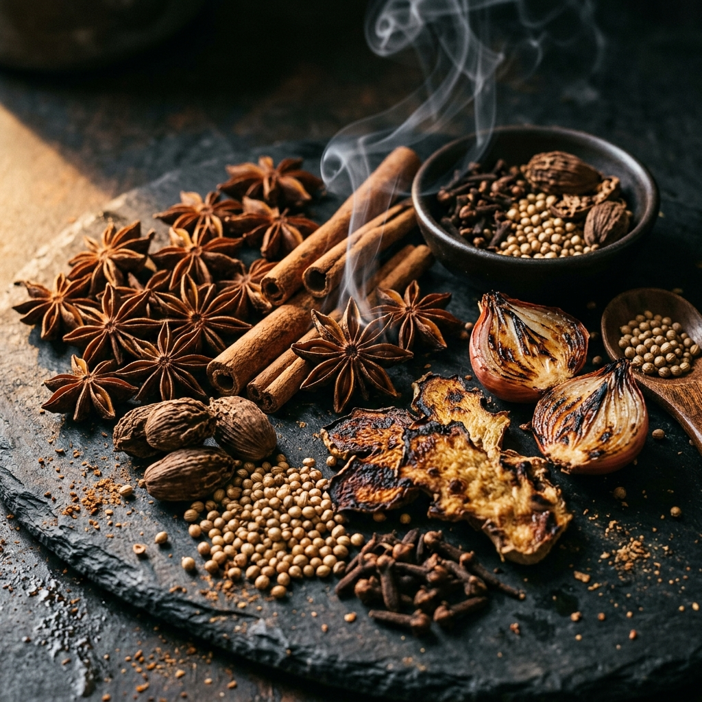

Nghệ thuật của nguyên liệu
Hoa Hồi & Nước Dùng Xương.
Sự kiên nhẫn tối thượng. Nền tảng của bát Phở truyền thống không nằm ở bước trình bày cuối cùng, mà ở quá trình chiết xuất chậm rãi, tỉ mỉ các loại tinh dầu quý từ các gia vị được nướng nồng nàn.

Hoa Hồi — Illicium verum